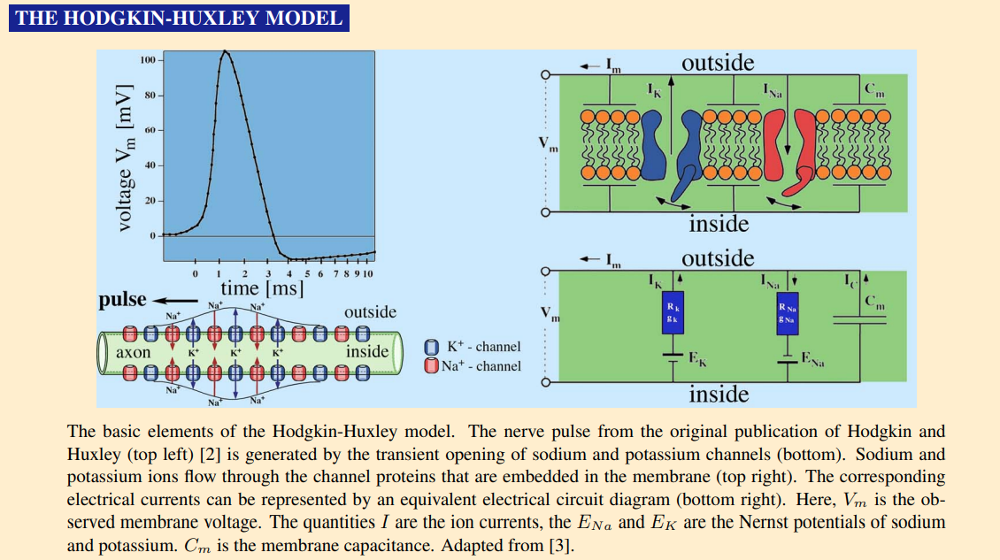

Quotation:
This was how — Richard P. Feynman approached all knowledge: What can I know for sure, and how can I come to know it?
It resulted in his famous quote, “You must not fool yourself, and you are the easiest person to fool.”

Pros and cons:: Hodgkin-Huxley V1.0 Pros: Goods • 1 • 2 Cons: bads